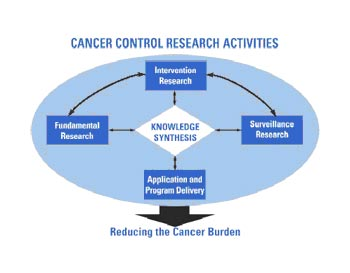

Step-By-Step Grant Help
How can I learn about opportunities for funding cancer control research at NIH?
The National Institutes of Health's (NIH) mission is science in pursuit of fundamental knowledge about the nature and behavior of living systems, and the application of that knowledge to extend healthy life and reduce the burdens of illness and disability. NIH accomplishes much of this charge by providing funding to non-federal entities. The National Cancer Institute (NCI) follows NIH procedures for dispensing funds for extramural research that is focused specifically on cancer.
Within NCI, the Division of Cancer Control and Population Sciences (DCCPS) funds research on cancer control and population sciences, as opposed to basic science, biology, and treatment. DCCPS was established in 1997 to enhance NCI's ability to alleviate the burden of cancer through research in epidemiology, behavioral sciences, health services, surveillance, and cancer survivorship. Cancer control research aims to generate basic knowledge about how to monitor and change individual and collective behavior, and to ensure that this knowledge is translated into practice.
Each year, NIH distributes approximately $20 billion to outside organizations for research. The NCI's annual research budget exceeds $6 billion, and DCCPS funds research projects for over $398 million a year. As an applicant for a portion of these funds, it is your job to understand how NIH makes decisions about allocating them. You can improve your cancer control project's chances of being funded by taking the time to:
- Learn about funding sources and opportunities at NIH, NCI, and DCCPS
- Become familiar with NCI and DCCPS research priorities
- Understand the NIH application review process
- Identify an appropriate funding mechanism
- Plan your application
- Get help in preparing your application from DCCPS, NCI, or NIH grant staff
- Write a strong research plan
- Take practical steps to ensure your application stays on track
- Complete the PHS 398 form without common errors
- Submit your application on time, to the right destination, using correct procedures
NIH Funding Sources
Before you decide to submit an application for your cancer control research project, it is wise to familiarize yourself with the range of funding opportunities at NIH, NCI, and DCCPS. The links below will allow you to search a variety of grant options, and to read about projects that have been funded in the past.
NIH Grants:
The National Institutes of Health (NIH) is one of eight agencies that compose the Public Health Service (PHS) in the Department of Health and Human Services (DHHS). NIH is the steward of medical and behavioral research for the Nation. It is composed of 19 Institutes, seven Centers, and the National Library of Medicine. NIH uses several funding instruments (e.g., grants, contracts, and cooperative agreements) to dispense funding to extramural researchers.
For more information on medical and behavioral research grant policies, guidelines and funding opportunities, see: http://grants.nih.gov/grants/guide/index.htm
NCI Grants:
The National Cancer Institute (NCI) is a component of the National Institutes of Health (NIH); it is the Federal Government's principal agency for cancer research and training. The NCI conducts and supports research and other programs with respect to the cause, diagnosis, prevention, and treatment of cancer, rehabilitation from cancer, and the continuing care of cancer patients and the families of cancer patients. NCI-sponsored research takes place in three settings: the laboratory, the clinic, and the community.
For more information, see: http://www.nci.nih.gov/research_funding/ For previously funded projects, see: http://researchportfolio.cancer.gov/
DCCPS Grants:
DCCPS aims to reduce risk, incidence, and deaths from cancer as well as enhance the quality of life for cancer survivors. The division conducts and supports an integrated program of genetic, epidemiologic, behavioral, social, applied, and surveillance cancer research. DCCPS-funded research aims to: understand the causes and distribution of cancer in populations; support the development and implementation of effective interventions; and monitor and explain cancer trends in all segments of the population.
For more information, see: http://cancercontrol.cancer.gov/funding_apply.html
For previously funded projects, see: http://cancercontrol.cancer.gov/brp/hcirb/sbir/index.html
NCI and DCCPS Research Priorities
NCI supports a broad range of scientific research to expand the understanding of cancer at the molecular level, and to learn how behavior and environmental factors affect its development and progression. These findings point the way to new strategies for prevention, control, early detection and diagnosis, treatment, and follow-up care.
Each year, NCI funds nearly 5,000 principal investigators to perform research that results in better ways to combat cancer. These scientists conduct studies at NCI (intramural) and at nearly 650 universities, hospitals, and other sites in almost every state in the nation, and in more than 20 foreign countries. Extramural program experts guide and oversee research at universities, teaching hospitals, and other organizations.
To learn more about NCI's current research priorities, you may want to read through recent planning documents such as "The Nation's Investment in Cancer Research for Fiscal Year 2006" and "NCI Participation in the NIH Roadmap for Medical Research." These can be found at the NCI Research Priorities Web page, at: http://www.cancer.gov/researchandfunding/priorities
DCCPS is often considered a "hybrid" division; it funds a large portfolio of grants and contracts, but it also conducts original research to inform public health policy. The dynamic, interdisciplinary nature of the division's activities is illustrated in the cancer control framework, below. The framework shows three research categories into which all cancer control research can be organized: fundamental, intervention, and surveillance. A detailed discussion of DCCPS research priorities can be found at: http://cancercontrol.cancer.gov/bb/
Cancer Control Research Activities
The dynamic and interdisciplinary nature of the division’s activities is illustrated in the cancer control framework. This framework illustrates three categories into which all cancer control activities can be assigned, and the central role of knowledge synthesis. All research areas act through application and program delivery to reduce the cancer burden, with a strong commitment to dissemination and diffusion, and collaborations that facilitate the application and program delivery of evidence-based approaches to cancer control.
